Hardware guide / robotiq
Robotiq setup on Franka
Configure Cloak for the standard DROID Robotiq assembly, including camera calibration and policy deployment.

01 / Start from working DROID
Your DROID installation must already work: Franka arm, real-time NUC, workstation, wrist and external ZED cameras, networking and robot control. This guide covers the conversion to Cloak, not initial DROID installation. Refer to the DROID documentation for that baseline.
The full assembly process is shown below for completeness. If your DROID system is fully installed and working with the Robotiq gripper, camera and Franka Desk configuration, skip to step 04: Workstation and checkpoint.
02 / Parts and mounting
Robotiq 2F-85, its DROID coupling and power/data hardware; ZED Mini wrist camera; the printed camera mount and its fasteners; the existing external ZED camera.
STL downloads
These files are included in the repository under docs/setup/stl/. Import them as millimeters, at 100% scale.
| Part | Preview | Quantity |
|---|---|---|
| Camera mount - part 1 | 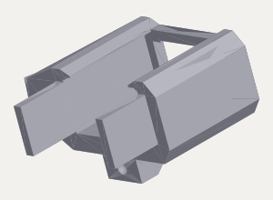 | 1 |
| Camera mount - part 2 | 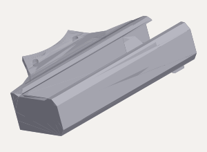 | 1 |
Part 1 closes the camera holder; part 2 attaches it to the robot. Print one of each. Check the slicer preview before printing.
Fasteners
Camera holder: one M3 × 10 mm screw and an M3 nut. Camera bracket to wrist: two M3 × 30 mm screws. Reuse these fasteners from your existing DROID camera installation. The DROID assembly guide specifies these lengths. The M3 size is inferred from the 3.0 mm screw holes in the DROID mount STL files and the confirmed use of the same thread size for both connections.
Coupling to Franka flange: four M6 × 10 mm screws. Robotiq gripper to coupling: four M5 × 30 mm screws. Follow the DROID Robotiq mounting instructions.
Mounting holes and orientation

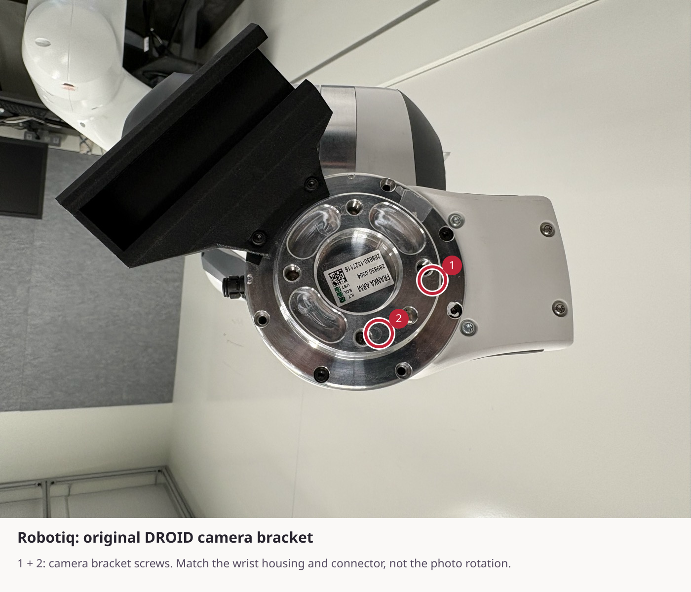
Keep the standard DROID coupling orientation shown below. The camera bracket and Robotiq coupling have separate mounting fasteners.
- If your working DROID Robotiq assembly matches these photos, leave it mounted. Cloak uses the standard DROID Robotiq orientation.
- If rebuilding after another embodiment, stop the controller and follow the normal DROID powered-down hardware-change procedure. Begin at the bare flange, attach the camera mount in the orientation shown, seat the ZED Mini, then attach the Robotiq coupling and gripper.
- Reconnect the camera USB cable and the DROID Robotiq power/data connections. Check connector seating, retention and slack before moving.
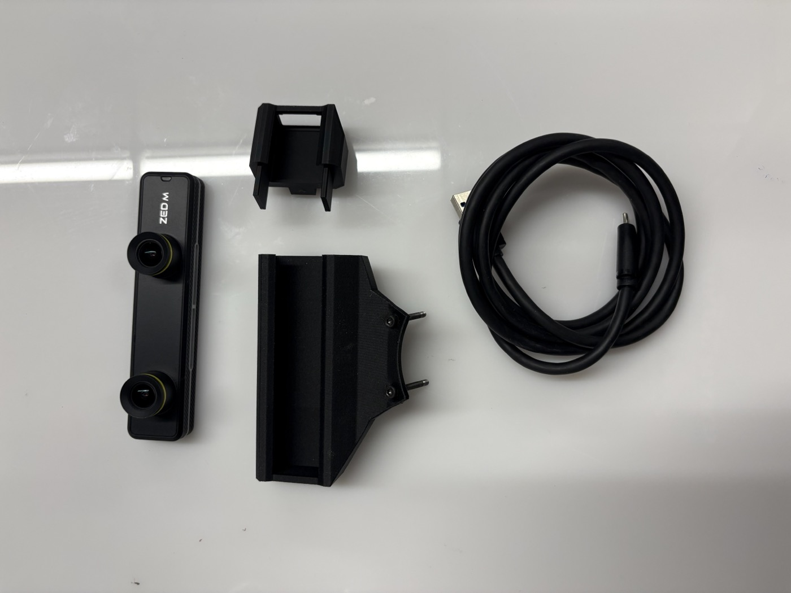
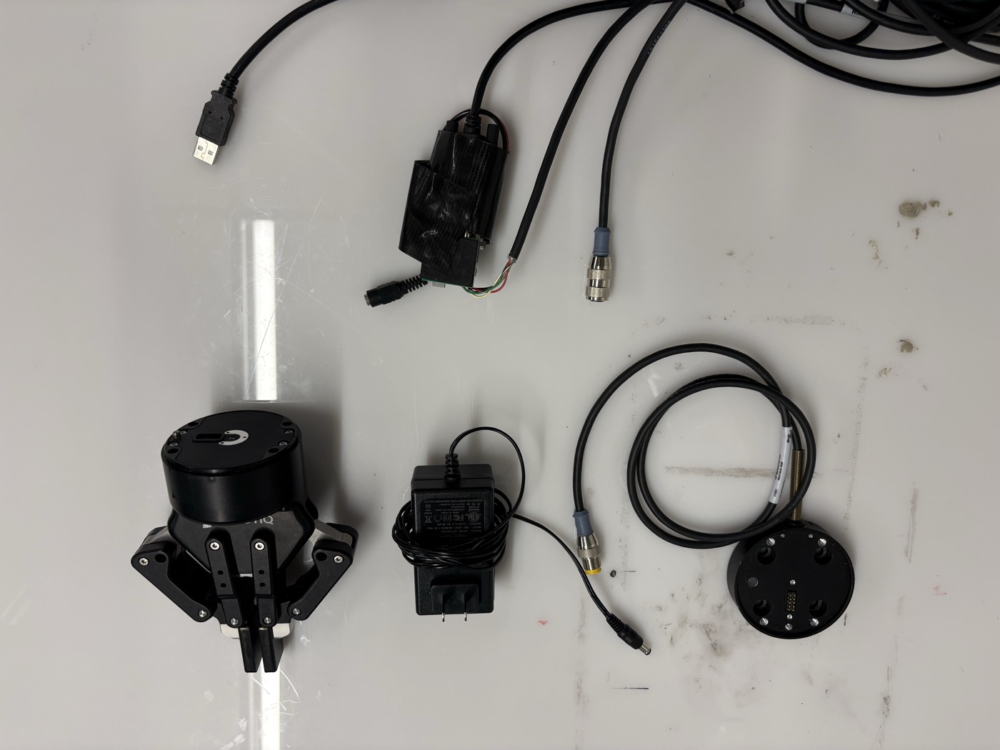
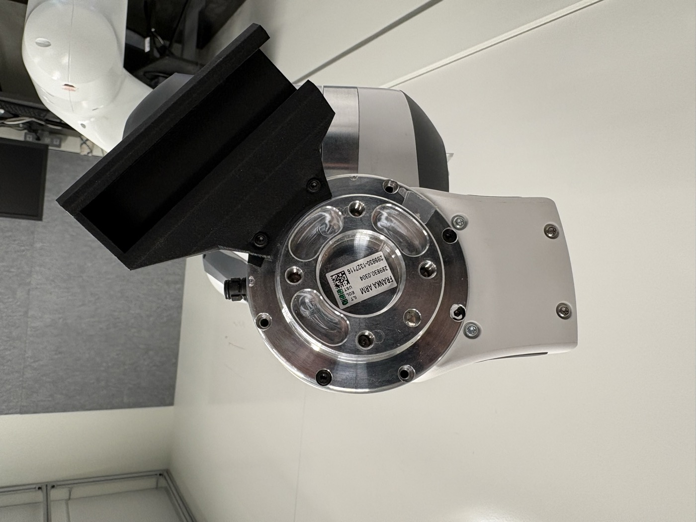
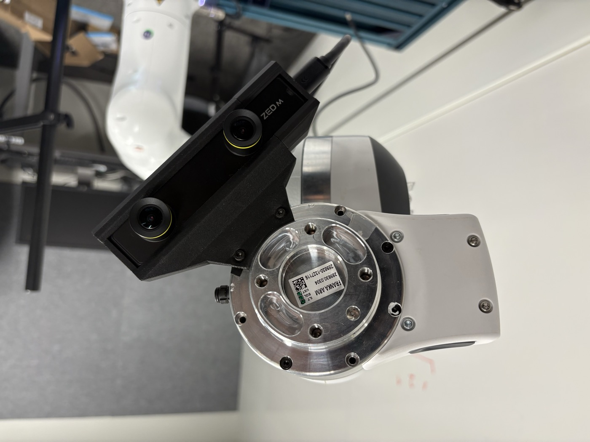
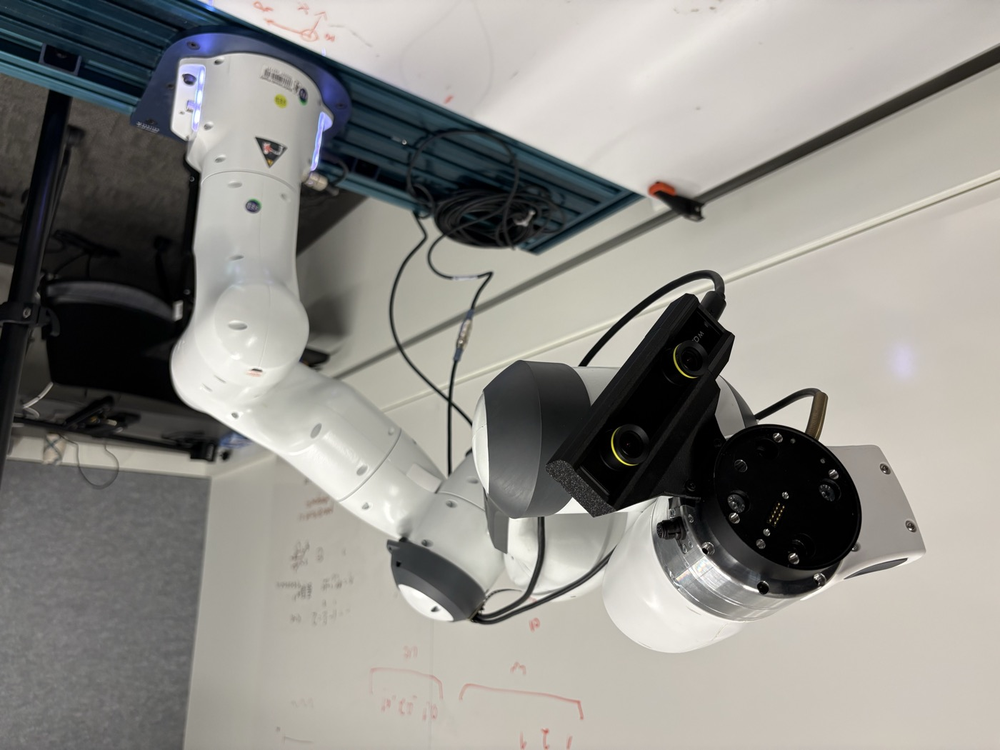
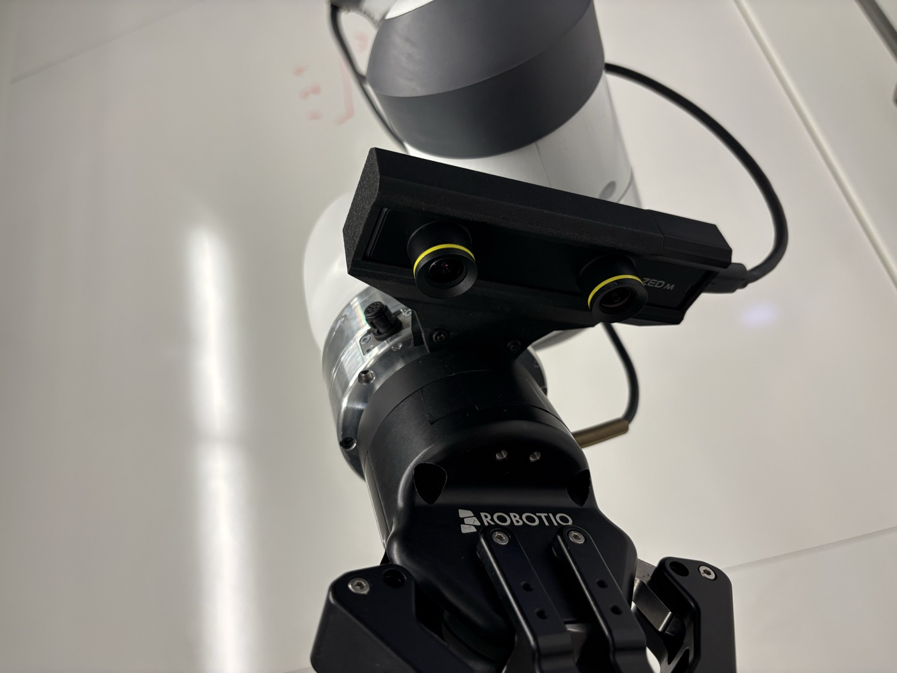
03 / Configure Franka Desk
Download robotiq_2f85.json from deployment/endeffector_configs/ in the repository to the computer where you use Franka Desk. On GitHub, use the file’s Download raw file button.
- Open Settings → End-effector (1).
- Select Other in the end-effector menu (2).
- Click Upload (3), choose
robotiq_2f85.jsonin the file picker, and confirm. - Click Apply (4). Check that the button changes to Applied and the values-differ warnings disappear.

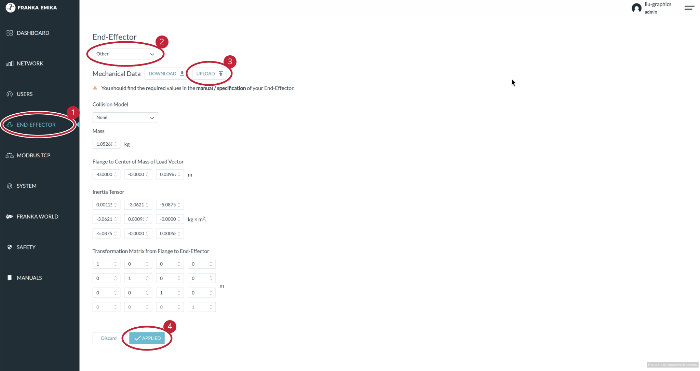
Use the supplied file for the pictured assembly. Reopen the page to confirm the settings were saved.
04 / Workstation and checkpoint
On the GPU workstation, use the Cloak checkout that contains these setup scripts.
git clone https://github.com/Stanford-TML/cloak.git
cd cloak
uv sync --group client --group dev
# Create settings only when they do not already exist.
[ -f .env ] || cp .env.example .envInstall the ZED SDK
If ZED SDK 5.1 is already installed, continue to the camera check below. Otherwise, download the 5.1 installer matching your Ubuntu and CUDA versions from the Stereolabs downloads page. Use 5.1 to match this repository’s Python API dependency.
Follow the Linux installation instructions: install zstd, give the downloaded installer execute permission, then run it. Keep the camera tools and AI module installed; Cloak uses neural depth. Restart the workstation when installation is complete.
The uv sync command above installs the project’s Python camera API. Installing the SDK alone does not install it into the Cloak environment.
Find the camera serial numbers
Connect the wrist and external cameras to the workstation. Close any program currently using them, then run:
/usr/local/zed/tools/ZED_Explorer --allThe output lists each camera’s model and S/N. Use the wrist camera’s S/N for WRIST_CAMERA_ID and the external camera’s S/N for EXTERNAL_CAMERA_ID. Enter only the digits, not the camera index or /dev/video path.
To confirm which view belongs to each camera, open ZED Explorer and select it from the camera menu:
/usr/local/zed/tools/ZED_ExplorerCheck the live image and note its serial number. If the two cameras are hard to distinguish, connect one at a time while no robot client is running. Close ZED Explorer before calibration or deployment so it releases the cameras. See Stereolabs’ serial-number instructions.
Configure the workstation
Enter your addresses and camera serial numbers in .env:
EMBODIMENT=robotiq
CLOAK_NUC_IP=<your-nuc-ip>
WRIST_CAMERA_ID=<wrist-zed-serial>
EXTERNAL_CAMERA_ID=<external-zed-serial>
WRIST_CAM_LENS=left
POLICY_HOST=127.0.0.1
POLICY_PORT=8000
CONFIG=pi05_full_droid_finetune_v3-1_ik
CHECKPOINT_DIR=/absolute/path/to/cloak_VLA/100000
DEBUG_MASKS=trueReplace every angle-bracket placeholder before running. Enter camera serial numbers without the SN prefix. Use 127.0.0.1 only when the policy server runs on the same workstation as the client.
Download Cloak-VLA from the checkpoint folder. Reuse an existing download. Point at the checkpoint directory containing params/ and assets/, not the ZIP file. This guide does not require training.
05 / Start the NUC bridge
Keep the existing working DROID container available for rollback. Copy deployment/nuc/ into a separate directory on the NUC. Review deployment/nuc/backend-manifest.json in the same checkout and the robot configuration for your arm and libfranka version before starting a replacement.
Build against an existing verified DROID image compatible with your arm and libfranka version. The historical registry tag is not publicly retrievable in our check; use your working DROID image and verify the dependencies in the NUC package reference. A fresh base-image build has not been validated.
# On the NUC, in the copied deployment/nuc directory:
docker build --build-arg BASE_IMAGE=<verified-droid-base> -t cloak-nuc:local .
export CLOAK_NUC_IMAGE=cloak-nuc:local
export ROBOT_IP=<arm-controller-ip>
# Set the verified Robotiq USB/RS-485 device on the NUC.
export ROBOTIQ_PORT=/dev/ttyUSB0
docker compose config
# Quit any robot client, then stop the existing controller container first.
docker stop <existing-controller-container>
docker compose up -d
docker compose logs -fThe bridge listens on port 4242; controller processes start when the workstation requests them. For Robotiq setup on Franka, the bridge selects the Robotiq driver. Confirm the configured USB/RS-485 device matches your DROID wiring.
Never run both controller containers against the robot at once. To roll back, quit the client, stop the Cloak service with docker compose stop, then restart the preserved original container. The workstation environment is not installed inside the NUC container.
Replace /dev/ttyUSB0 above with the verified Robotiq serial device on your NUC. UMI and Sharpa do not use this driver.
06 / Calibrate the wrist camera
Silhouette Calibration estimates the wrist camera extrinsics from images captured while the arm moves through several poses. Clear the workspace before starting:
bash scripts/calibrate_wrist_camera.sh --embodiment robotiqThe outputs are a calibration file, deployment/calibration/calibration_info_robotiq.json, and a mask visualization, scratch/wrist_calibration/robotiq/mask_overlay_robotiq.png. Deployment loads the calibration automatically. Inspect the overlay to confirm that the silhouette aligns with the end effector.
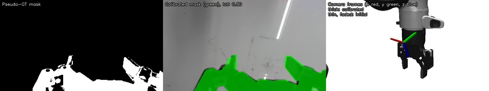
To fit an existing capture without moving the robot:
bash scripts/calibrate_wrist_camera.sh --embodiment robotiq --captures scratch/wrist_calibration/robotiqRecalibrate after changing the camera mount or orientation.
07 / Run a policy
Start the policy server on the GPU workstation:
bash scripts/serve_policy.sh --embodiment robotiqOnce the server is ready, start the robot client in another terminal:
bash scripts/deploy_policy.sh --embodiment robotiqKeep the arm’s home path clear during startup and reset. Check end-effector connectivity before entering a task instruction, then supervise the rollout. The client provides controls for stopping and saving the episode.
08 / Save and inspect the output
With DEBUG_MASKS=true set before starting the server, answer y to “Save video?” and enter a descriptive label. Outputs appear in test_videos/:
| File | Contents |
|---|---|
<episode>.mp4 | External and wrist RGB views. |
<episode>_mask.mp4 | Four panels: external RGB, wrist RGB, inference wrist image with green mask, binary mask. |
<episode>_masks.npz | Boolean masks, paired wrist images, control-step indices and nominal FPS. |
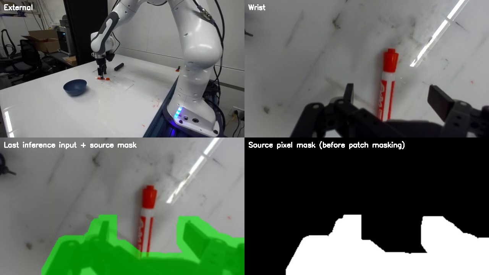
Masks update at policy queries. Between queries, the lower panels hold the matching inference image and mask, so they can lag the current camera views above. These are source pixel masks, not the model's final token grid. Playback uses nominal 15 Hz; inference pauses are not encoded as wall-clock timing.
If no mask files appear, check that the server was restarted after enabling DEBUG_MASKS. The client’s --debug option uses mock hardware and is not the mask-recording switch.
09 / Troubleshooting
Controller timeout, reflex stop or communication fault
Stop the run and inspect the NUC logs before retrying. Check that only one bridge is running, that the robot is ready for external control, and that the real-time network/backend is compatible. Do not treat automatic error recovery as proof that the underlying fault is resolved.
Mask does not follow the hand
Check embodiment, camera serial, lens and mount orientation. Rerun silhouette calibration after any mounting change. Inspect several poses before trusting the result.
Hand feedback or grasping is wrong
At the deployment instruction prompt, with the empty hand clear, type g and press Enter to check hand connectivity and motion. It commands the hand to close and reopen. Confirm both movements before entering a task. If it does not respond, check power, connectors and the hand driver. Confirm Robotiq activation, power and USB/RS-485 device selection on the NUC. Check measured opening as well as physical finger motion.